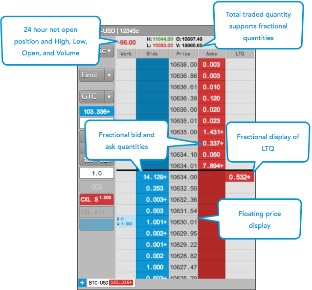
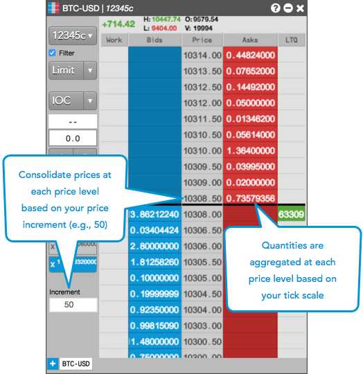
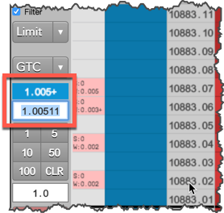
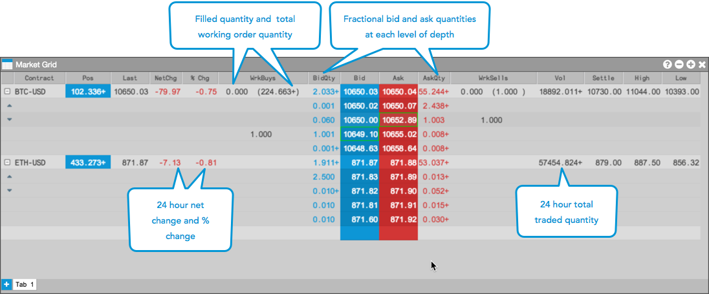
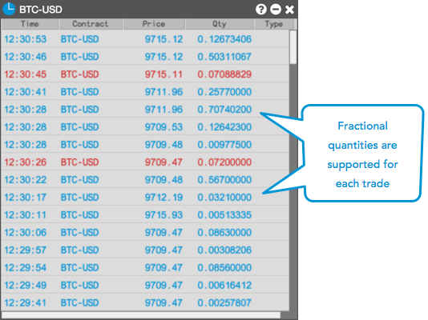
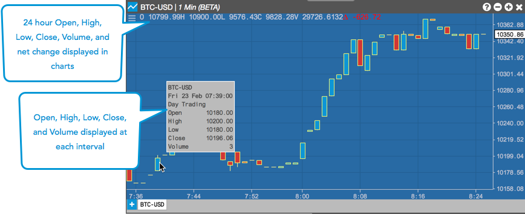

).
).You can view market data for crypto instruments in the MD Trader, Market Grid, Time and Sales, and Charts widgets.
When viewing crypto market data in MD Trader, consider the following:
The following example shows crypto market data displayed in MD Trader.

You can consolidate prices at specific price increments by enabling the Settings | Price increment per row option in MD Trader. When enabled, aggregate order quantities between each price increment are displayed at each price level. For example, a price increment of "50" for Coinbase BTC-USD which trades in .01 increments results in prices displaying in .50 increments.

Quantities can be displayed with 0-8 decimals of precision using the Quantity display decimal places option in the Preferences | General tab. By default, this option is set to "3".
A "+" is shown after the last displayed decimal to indicate additional quantity
(e.g., ).
 .
.
The following fields will adhere to the "Quantity display decimal places" setting:
Note: Net position fields are not shown for TT Crypto users.
Note: The Order Book, Audit Trail, and Fills widgets will show the full quantity regardless of this setting.
If you click a formatted quantity when "Quantity display decimal places" is enabled, the actual, full quantity will seed in the appropriate widget field. For example, if you click "1.005+"" in the Net Open Position field in the MD Trader order entry panel, then "1.00511" will be seeded in the order quantity field.

When viewing crypto market data in the Market Grid, consider the following:
The following example shows crypto market data displayed in the Market Grid:

For each trade, the Time and Sales widget supports showing the fractional traded order quantity up to eight decimal places.

For each crypto instrument, the Charts widget supports showing the 24 hour High, Low, Close, Volume, and Net Change in addition to showing market data at each user-defined time interval.
